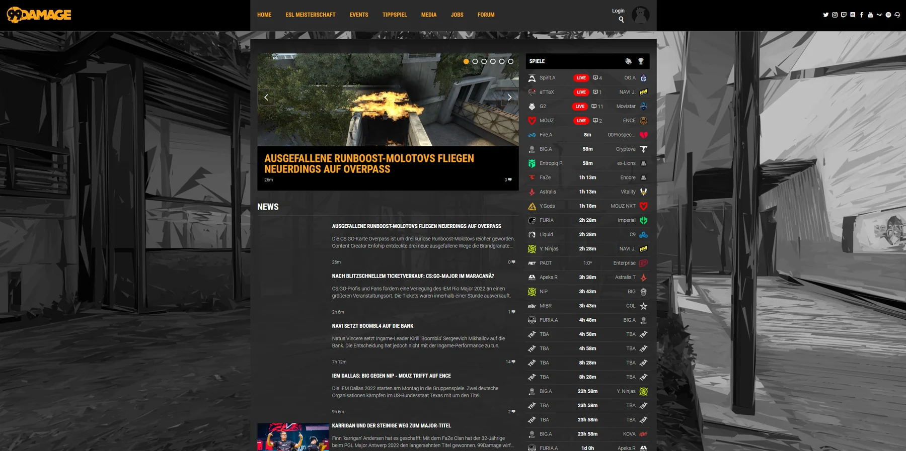
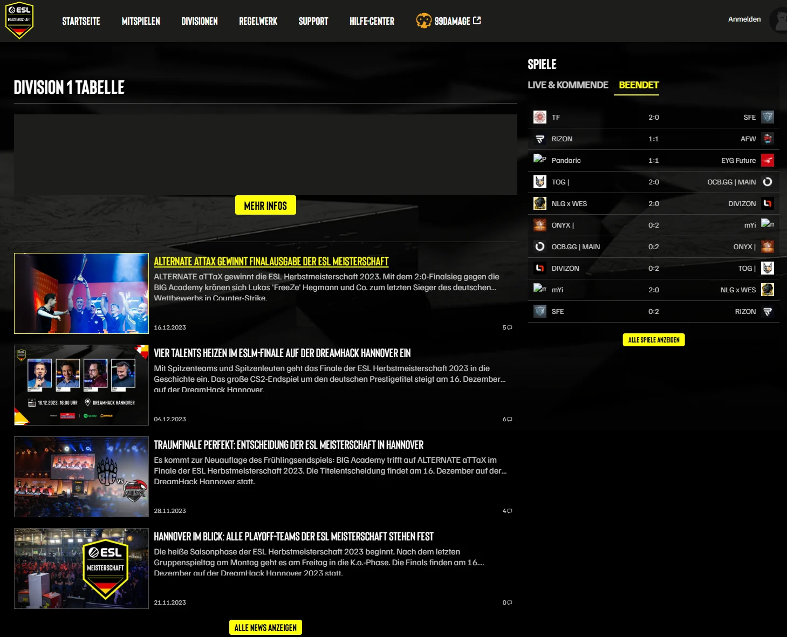

Case study · Prime League and ESL Meisterschaft · 2023
An esports platform people can follow
Prime League and its sister leagues ran on one platform, and every path started with the league's data model. As the UX designer on the team, I researched where players got lost, turned the findings into problem statements, and worked with the team on the features that fixed it.
- Role
- UX designer and UX researcher. The UI came from the team's UI designer.
- Team
- 1 UI designer, 1 product manager, 3 developers, working in sprints
- Product
- Prime League, 99Damage League, ESL Meisterschaft and the DreamHack Leipzig LAN portal on one CMS
- Method
- Hotjar, Maze, moderated usability tests, card sorting with 25 people, support ticket analysis
- Proof
- primeleague.gg (opens in a new tab) is still live. ESL Meisterschaft ended in 2023, and the other portals have been offline since Freaks 4U Gaming's insolvency.
Challenge
Our mission was to make the league accessible to every gamer. But players couldn't find their next match, and the platform answered none of the questions people came with. The league lost teams and players at the start of the season and over its course, and support answered tickets about things players should have found on their own.
The league lives on active players. Sponsors pay for them, and that pays for the league.
Impact
- +30 %Teams and players who finished the season
- −15 %Support tickets on ESL Meisterschaft, 90 % fewer basic questions about schedule and rules measured
- 64,000Users per season, +9 % compared to 2022
- 4Platforms on one CMS
Collaboration
I owned the research and turned it into problem statements and hypotheses. That gave the team's brainstorming a starting point. The features came out of it together, and I took the concepts to the product manager. The UI came from the team's UI designer.
What was failing
The league lost teams and players during the season
Teams and players dropped out at the start of the season and over its course. Every path started with the league, then the season, then the division, and the match came last.
Hotjar recordings showed people scrolling past the main navigation. In moderated tests they knew roughly where to look, but could not predict what they would find there. Players opened support tickets for small things they couldn't find.
Retention vorher (wie viele Teams beendeten die Saison?), alte Screens oder Zitate aus den TestsResearch
People grouped everything around the match
In a card sort with 25 players, teams and spectators, people grouped content by what they wanted to do around a match. Three groups came out of it, each with its own question.
Card-Sort-Ergebnisse (Gruppen, Überraschungen), Testaufgaben und Erfolgsquoten, Bild vom Card Sort- Players Compete "When and where is my next match?"
- Teams Prepare "Who do we play next, and how strong are they?"
- Spectators Watch "Where does the tournament stand right now?"
Insight
The league structure is how the data is stored, not how people use it. The navigation had to start from the match.
Information architecture
Rebuilt the structure around the match
Hypothesis. If the navigation starts from the match instead of the league, more teams and players stay through the season.
From league-first to match-first navigation
The information architecture of all competitions now starts from three entry points: compete, prepare, watch. Your next match, your team and the live tournament are one step from the start page.
Before · league-first
After · match-first

From one generic user to three entry points
One generic user would have fit none of the three groups. So players, teams and spectators each got their own way in, built around their own question.
Bestätigen; welche Alternativen habt ihr wirklich geprüft und verworfen?From the league as the front door to the league as a filter
League, season and division stayed, but as filters on the match, team and tournament pages.
BestätigenIA improvements
Turned the findings into features
The ideas came out of the team's brainstorming after the research. My problem statements and hypotheses gave it a starting point. I took the concepts to the product manager, and we built them in sprints.
From pages spread across the site to one global sidebar
Team management, schedule, check-in, support tickets and your own profile sit in one sidebar on every page.
Welchen Research-Befund löst die Sidebar?
From forums and TeamSpeak to notifications in Discord
Community talk had moved from classic forums and TeamSpeak to Discord. So we gave players a bot that keeps them up to date where they already are. It sends everything the notification center offers, and players choose per event and channel: in-app, email, push or Discord. An MVP covered the setup first.

From scattered FAQs and support tickets to one help center
Players kept asking where their next match was and what they needed to know to start, often through support tickets. On my own initiative, I wrote a UX concept, gathered every known FAQ in one place and added new content from support tickets and player feedback.
Hypothesis. One place for all answers lowers the support load.
Result. 15 % fewer support tickets measured, counted in the ticket system over three seasons against the seasons before. Basic questions about schedule and rules dropped by 90 %. The help center stayed exclusive to ESL Meisterschaft, ready to carry over to the other platforms.

The system
One CMS carried the features to every platform
The features ran on the shared CMS, so 99Damage League, ESL Meisterschaft and the DreamHack Leipzig LAN portal got them too. The same pattern shows on each: matches live and upcoming next to the news.
Team and player statistics got their own rework, see Team profiles and statistics.
Hast du bei 99Damage und ESL Meisterschaft mitgestaltet? Screens ggf. auf die Spiele-Liste zuschneiden (fremde Pressefotos und Logos)



Result
More teams finished the season
After the relaunch, 30 % more teams and players finished the season, and users per season grew to 64,000, 9 % more than in 2022. We attribute most of it to taking part in the league getting easier. On ESL Meisterschaft, the help center cut support tickets by 15 %.
What I learned. The Hotjar recordings showed the problem before any interview did.
What I would do differently
Agree on targets before the work starts. We tracked the right numbers in Google Analytics, but shared targets up front would have helped me argue for decisions, especially as the newest designer on the team.
Happy to tell you how the card sort changed the navigation.
Let's talk